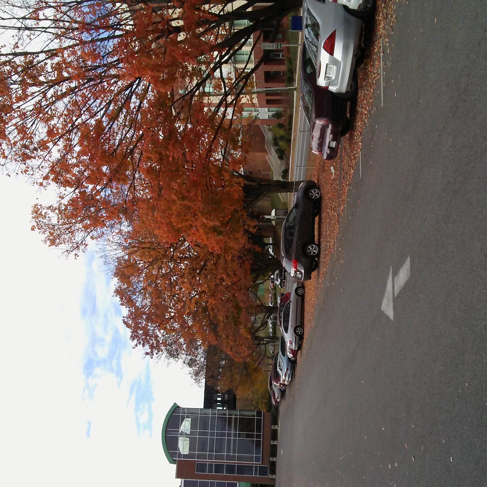

FadI's beautiful outdoor college picture

To learn more ....
Please view the About the College page.
Here is some more information about the college address and more ..
Please take a quick look at Contact page
more fun yet to come!!
Will add a list of what to look for when visiting the college!
READY !
- Enjoy the most beautiful scene from the top of the mountain.
- Meet the most friendly people in the world!
- Spend a good amount of time in the recreation place.
- pick up your study program.
- When all done sign up for your new semester clesses.
Also see the Link